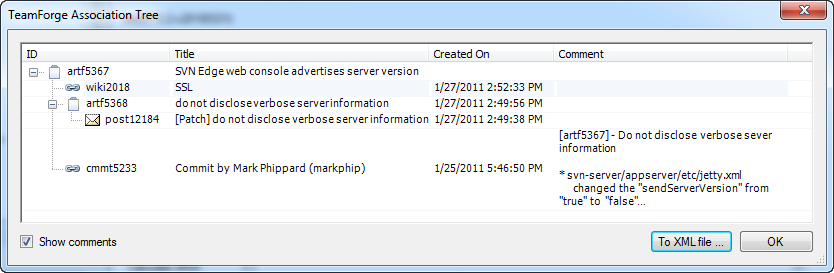
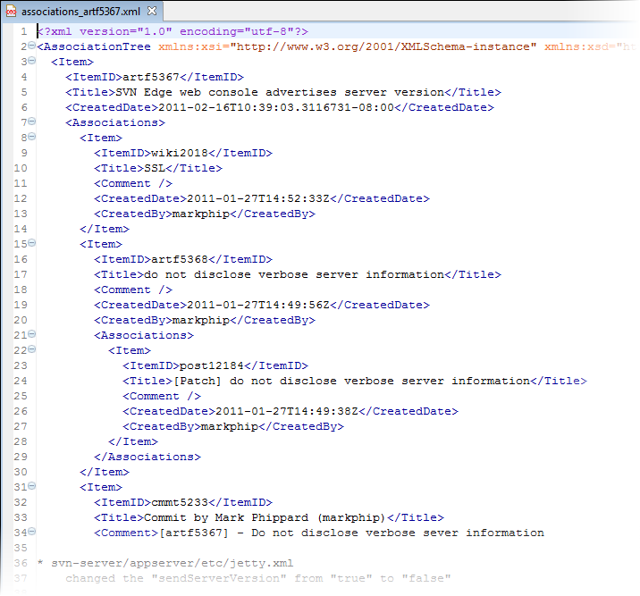

To see a cascading chain of all items associated with a single, selected TeamForge item, bring up its Association Tree.
Consider the example of a TeamForge User Story artifact associated with a Defect artifact. In the course of fixing the defect, a discussion post, or perhaps a wiki update, might get associated with it. Eventually, a commit to fix the defect would probably get associated as well.
To get a picture of the artifact's chain of associations, use the option to view its Association Tree.
-
Right-click an item in the CollabNet Sites view and select Show Association Tree.
If you're working in the Project Plan Editor, this option is also available for an artifact in the artifact table or Backlog pane.
The item's TeamForge Association Tree is displayed.

-
To save the results in an XML file, click To XML file in the TeamForge Association Tree dialog.
For the above example, here's the XML:

-
Click OK.